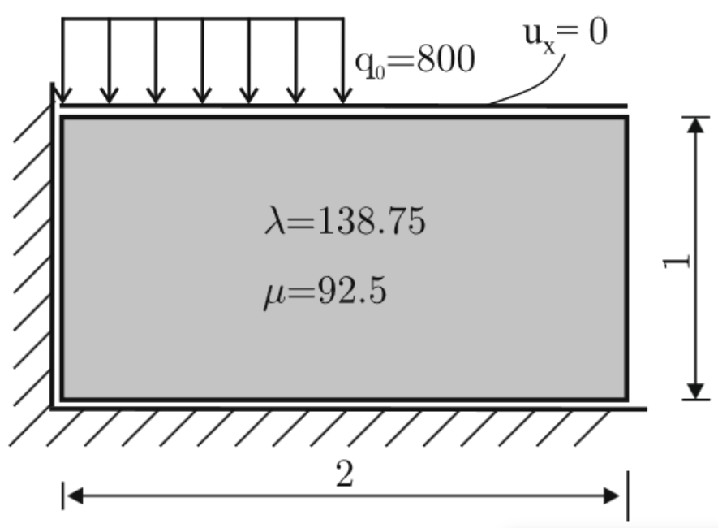
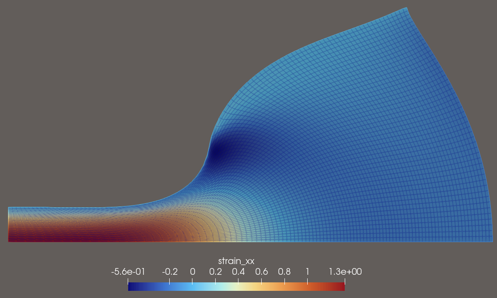

Quickstart to AutoPDEx
In this example, we do a finite element analysis of the following hyperelastic mechanical punch problem:


Imports
[ ]:
import jax
import jax.numpy as jnp
from autopdex import SimState, dae, spaces
jax.config.update("jax_enable_x64", True)
Problem setup
[2]:
L, H = 2.0, 1.0
vertices = [[0.0, 0.0], [L, 0.0], [L, H], [0.0, H]]
n_elements = (100, 50)
lam = 138.75
mu = 92.5
q0 = -8.0e2
Strain energy and weak form
[3]:
def neo_hooke_strain_energy(F, lam, mu):
J = jnp.linalg.det(F)
I1 = jnp.trace(F.T @ F)
log_J = jnp.log(J)
return 0.5 * mu * (I1 - 3.0) - mu * log_J + 0.5 * lam * log_J**2
def weak_form(ctx: SimState.ModelContext):
x, t = ctx.x_int, ctx.t
u_fun = ctx.trial_ansatz["displacement"]
grad_u = jax.jacfwd(u_fun)(x, t)
strain = 0.5 * (grad_u + grad_u.T)
# Here we define the outputs which are L2-projected on the mesh for vtu output
# During output mode, the test_ansatz is not available,
# so they have to be used after the output return
if ctx.mode == "output":
return {
"displacement": u_fun(x, t),
"strain_xx": strain[0, 0],
"strain_yy": strain[1, 1],
}
F = jnp.asarray([
[1.0 + grad_u[0, 0], grad_u[0, 1], 0.0],
[grad_u[1, 0], 1.0 + grad_u[1, 1], 0.0],
[0.0, 0.0, 1.0],
])
P = jax.jacrev(neo_hooke_strain_energy)(F, lam, mu)
grad_v = jax.jacfwd(ctx.test_ansatz["displacement"])(x)
virtual_F = jnp.asarray([
[grad_v[0, 0], grad_v[0, 1], 0.0],
[grad_v[1, 0], grad_v[1, 1], 0.0],
[0.0, 0.0, 0.0],
])
return jnp.sum(P * virtual_F)
Problem set-up
[4]:
sim = SimState({
"displacement": spaces.H1(order=1, dim=2, field_dimension=2),
})
sim.add_structured_mesh(n_elements, vertices, "quad") # or sim.import_mesh(meshio_object)
sim.add_temporal_discretization({"displacement": dae.NoTimeDerivative()})
sim.add_model("__all__", "weak form", weak_form)
sim.add_strong_bc("displacement", lambda x: jnp.isclose(x[0], 0.0), lambda x, t: 0.0, index=0)
sim.add_strong_bc("displacement", lambda x: jnp.isclose(x[1], 0.0), lambda x, t: 0.0, index=1)
sim.add_strong_bc("displacement", lambda x: jnp.isclose(x[1], H), lambda x, t: 0.0, index=0)
sim.add_weak_bc(
"displacement",
lambda x: jnp.logical_and(jnp.isclose(x[1], H), x[0] <= L / 2.0 + 1e-10),
lambda x, t, settings: jnp.asarray([0.0, q0 * t]), # Load is applied linearly over time
)
sim.set_postprocessing_policy(dae.SaveAllPolicy(), result_folder_name="quickstart.res")
sim.set_step_size_controller(dae.RootIterationController())
sim.initialize(verbose=1)
sim.prepare()
Analysis
[5]:
sim = sim.run(dt0=0.25, time_span=1.0, num_time_steps=1000)
# num_time_steps is maximal number of time steps for the root iteration controller
Linear solver: Pardiso(lu); 32 threads.
Iteration 1, Residual norm: 0.3718384939636749
Iteration 2, Residual norm: nan
Iteration 1, Residual norm: 0.07266248448174233
Iteration 2, Residual norm: 0.024629953184341958
Iteration 3, Residual norm: 0.003010739499295178
Iteration 4, Residual norm: 5.963256326673091e-05
Iteration 5, Residual norm: 2.411671564713545e-08
Iteration 6, Residual norm: 7.737858878545537e-15
Progress: 12%, Time: 1.25e-01, dt: 1.25e-01, iterations: 6
Iteration 1, Residual norm: 0.054056452248771356
Iteration 2, Residual norm: 0.012719533002321115
Iteration 3, Residual norm: 0.000786530998574173
Iteration 4, Residual norm: 3.9816983944223e-06
Iteration 5, Residual norm: 1.051446472532503e-10
Progress: 25%, Time: 2.50e-01, dt: 1.35e-01, iterations: 5
Iteration 1, Residual norm: 0.043983948702100255
Iteration 2, Residual norm: 0.003937728893569618
Iteration 3, Residual norm: 7.449486640430311e-05
Iteration 4, Residual norm: 3.188161267601681e-08
Iteration 5, Residual norm: 3.6866714161376067e-14
Progress: 38%, Time: 3.85e-01, dt: 1.47e-01, iterations: 5
Iteration 1, Residual norm: 0.041408704029522084
Iteration 2, Residual norm: 0.002339939203606178
Iteration 3, Residual norm: 3.021315460446977e-05
Iteration 4, Residual norm: 7.163900981125326e-09
Progress: 53%, Time: 5.32e-01, dt: 1.71e-01, iterations: 4
Iteration 1, Residual norm: 0.055158002985548266
Iteration 2, Residual norm: 0.002903187651204979
Iteration 3, Residual norm: 2.454052823270985e-05
Iteration 4, Residual norm: 3.525161868632625e-09
Progress: 70%, Time: 7.03e-01, dt: 2.00e-01, iterations: 4
Iteration 1, Residual norm: 0.07772482065585377
Iteration 2, Residual norm: 0.004121836543364814
Iteration 3, Residual norm: 2.4672909230029175e-05
Iteration 4, Residual norm: 1.587659958403031e-09
Progress: 90%, Time: 9.03e-01, dt: 2.33e-01, iterations: 4
Iteration 1, Residual norm: 0.015004167122470536
Iteration 2, Residual norm: 0.00017222889712663667
Iteration 3, Residual norm: 3.689713602411254e-08
Iteration 4, Residual norm: 2.4452215186246246e-13
Progress: 100%, Time: 1.00e+00, dt: 1.13e-01, iterations: 4
[ ]: